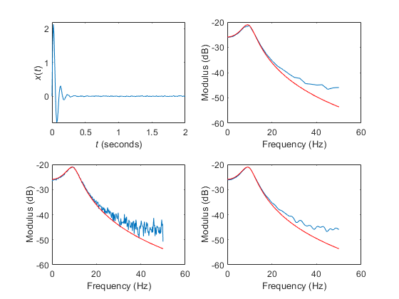
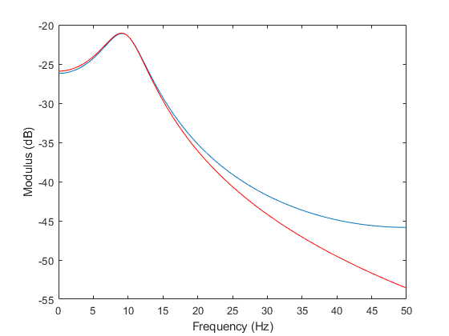

clear all
fs = 100;
T = 5;
t = [0:1/fs:T-1/fs];
A = 200;
zeta = 0.3;
wn = 2*pi*10;
wd = sqrt(1-zeta^2)*wn;
x = (A/wd) * exp(-zeta*wn*t) .* sin(wd*t);
var_x = sum((x - mean(x)).^2) / (length(x) - 1);
randn('state', 0);
noise = 0.05 * sqrt(var_x) * randn(size(x));
xn = x + noise;
subplot(2,2,1)
plot(t, xn)
axis([0 2 -0.8 2.2])
xlabel('\itt\rm (seconds)');
ylabel('\itx\rm(\itt\rm)')
Xn1 = fft(xn, 40);
N1 = length(Xn1);
f1 = fs * (0:N1-1) / N1;
Xn2 = fft(xn);
N2 = length(xn);
f2 = fs * (0:N2-1) / N2;
Xa = A ./ (wn^2 - (2*pi*f2).^2 + i*2*zeta*wn*(2*pi*f2));
subplot(2,2,2)
plot(f1(1:N1/2+1), 20*log10(abs(Xn1(1:N1/2+1) / fs)))
hold on
plot(f2(1:N2/2+1), 20*log10(abs(Xa(1:N2/2+1))), 'r')
xlabel('Frequency (Hz)');
ylabel('Modulus (dB)');
hold off
subplot(2,2,3)
plot(f2(1:N2/2+1), 20*log10(abs(Xn2(1:N2/2+1) / fs)))
hold on
plot(f2(1:N2/2+1), 20*log10(abs(Xa(1:N2/2+1))), 'r')
xlabel('Frequency (Hz)');
ylabel('Modulus (dB)');
hold off
Xnz = fft(xn(1:40), N2);
subplot(2,2,4)
plot(f2(1:N2/2+1), 20*log10(abs(Xnz(1:N2/2+1) / fs)))
hold on
plot(f2(1:N2/2+1), 20*log10(abs(Xa(1:N2/2+1))), 'r')
xlabel('Frequency (Hz)');
ylabel('Modulus (dB)');
hold off
X=fft(x);
figure(2)
plot(f2(1:N2/2+1), 20*log10(abs(X(1:N2/2+1)/fs)));
hold on
plot(f2(1:N2/2+1), 20*log10(abs(Xa(1:N2/2+1))), 'r')
xlabel('Frequency (Hz)'); ylabel('Modulus (dB)');
hold off
 